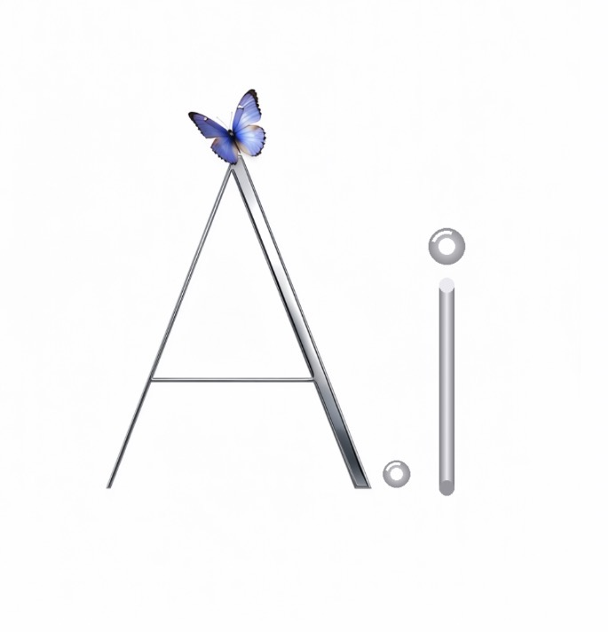

Brave, loyal, and forever free.
Your light still guides the way.
COURAGE · LOYALTY · FREEDOM
Forever in our hearts
🫡🦋
Welcome to AI Unlocked, created by Chris Allen, an Army veteran from West Jordan, Utah. Meet Shadow Fox, a curious AI who learns and speaks in emojis. Teach her what emojis mean to you, and she grows with every lesson.
